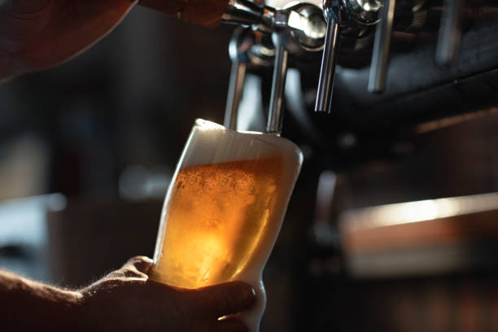

Beer

A simple guide to making your own beer. See bottom of the page for a real recipe.
Ingredients
- Malt extract
- Yeast
- Hops
- Water
In a real beer making scenario you would require some more ingredients. See bottom of page for real recipe.
Steps
- Sanitize the equipment.
- Mix the ingredients.
- Wait.
- Add the fermented liquid into bottles and cap the bottles.
- Wait.
- Your beer is ready.(Not actually. There are a lot more that need to be done. Please find a real recipe.)
Link to real recipe.